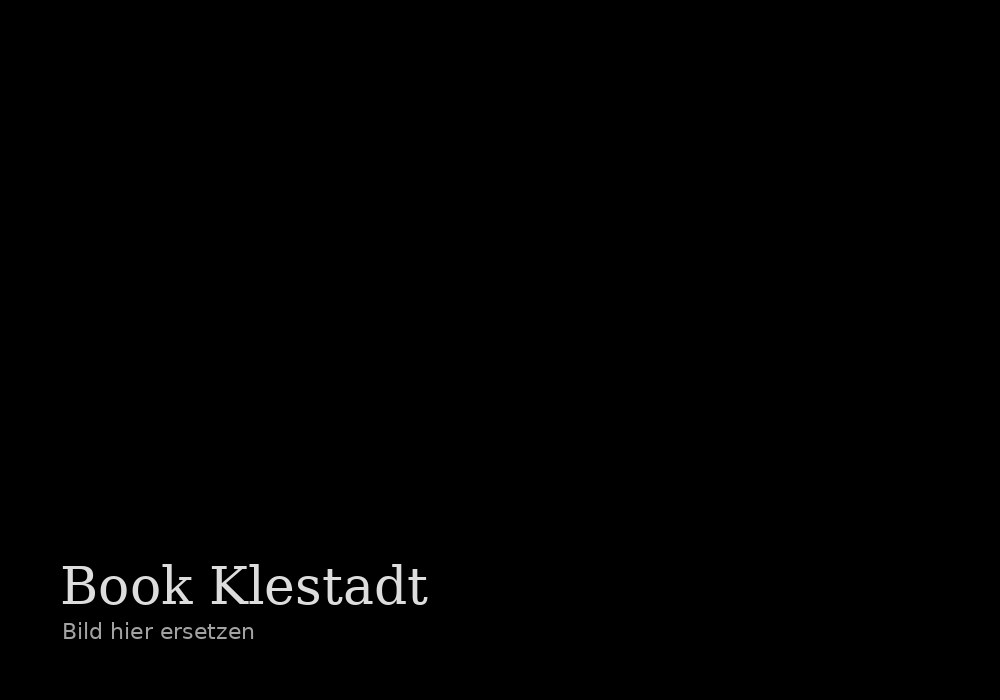
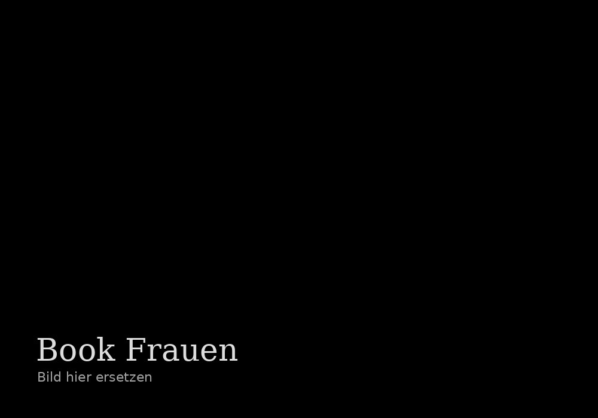

Publikation
Publikationen des Instituts und weitere wissenschaftliche Arbeiten.
Unser Institut hat verschiedene Publikationen selbst hergestellt und an vielen weiteren mitgearbeitet. Einige Bücher können direkt bei uns erworben werden. Bitte wenden Sie sich dafür an: IGSL@email.de

